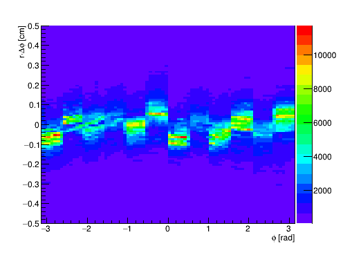
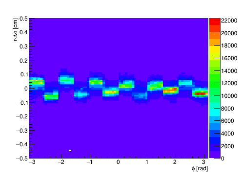
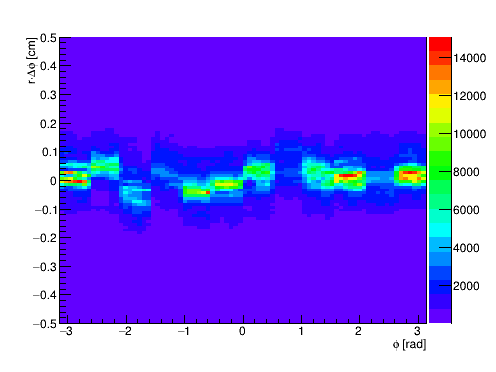
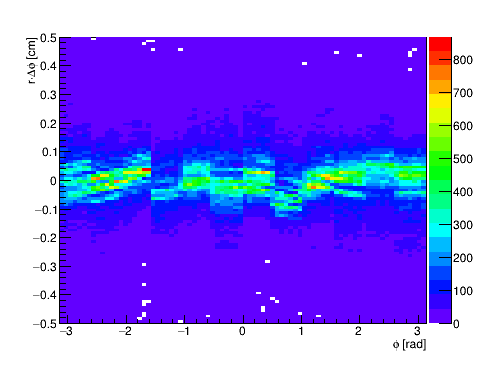
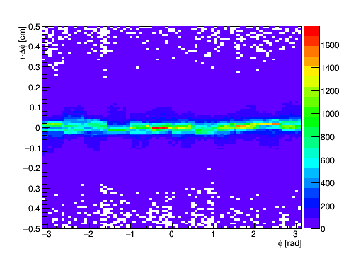
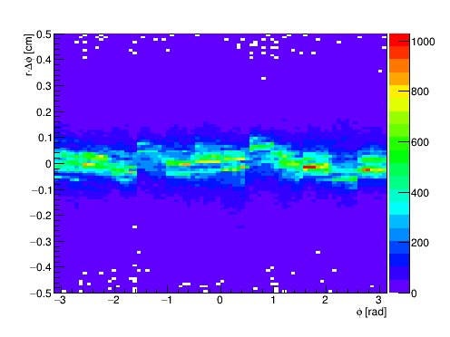

"alignTree"), one row per removed hit:
run, event, trackId — event/track identifiers
trackType — 0=Global,1=Beamline,2=Primary,3=FwdVtx,4=BLCVtx
detType — 0=FST, 1=FTT
genfitPlaneIndex — not reliably preserved into the leave-one-out seed (see code comment); planes are identified by hitZ clustering in the plotting scripts instead
stripDir — FTT only: 0=undetermined,1=V-strip (measures x),2=H-strip (measures y)
hitX, hitY, hitZ — the removed hit's position [cm]
projX, projY, projZ — the leave-one-out refit's projection to the removed hit's z [cm]
chi2ndf, nPointsUsed, converged — refit quality
DataDisk/pico/alignment/*.FwdAlignment_BLCVtx.root (track type: BLCVtx), 150 files, ~117M rows
For scale: FST strip pitch in φ is 4.09 mrad (inner sensor, 128 phi segments/wedge) or 8.18 mrad (outer sensors, 64 phi segments/wedge). In arc length r·Δφ, that's 0.021 cm at rmin=5 cm (inner) up to 0.229 cm at rmax=28 cm (outer).
| FST0 | FST1 | FST2 | |
|---|---|---|---|
| Uncorrected |  |
 |
 |
| Corrected |  |
 |
 |
r·Δφ vs φ, raw (no fit/profile overlay). Top row: a clean, reproducible 12-fold (30°) step pattern, one level per FST wedge, present on all 3 disks. Candidate explanation (not yet confirmed): StFstHitMaker::Make() computes a DB/survey-based per-sensor alignment correction but doesn't apply it — though we don't yet know whether that discarded correction would even be correct (real survey data vs. unpopulated/identity DB entries), or whether this is intentional pending real alignment data. Bottom row: same 15 files (subset) with the per-wedge phi correction applied — steps are visibly smaller but not gone. See the per-wedge correction page for the full validation and the translation-test page for the root-cause discussion.
Survey_st DB entries actually hold validated survey offsets before concluding anything about StFstHitMaker::Make()
Earlier, preliminary study using the biased StFwdResidualMaker (residual pulled toward the hit, superseded by the analysis above): biased/index.html
{kind=link}
{kind=link}
{kind=link}
{kind=link}
{kind=link}
{kind=link}